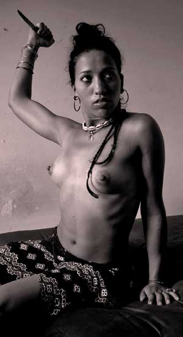
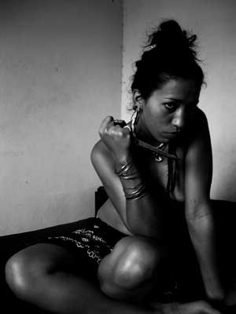
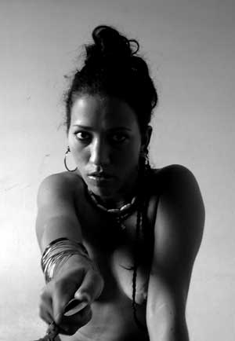
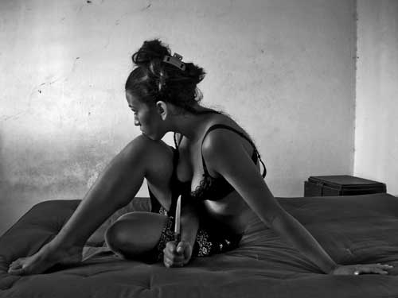

|
|
DUNIA
A veces le cruzaban demonios por el rostro; ángeles negros que contraían sus facciones en un rictus aterrador, que afortunadamente duraba apenas un instante. Pero durante esos segundos, temblaba por dentro.  Otras, sólo brotaba un frío azul
de su mirada. Alzaba entonces con superioridad la frente, y su cuello
se me antojaba inmenso. Pasaba a mi lado como si yo ni siquiera
existiera. De la mano de alguien escogido al azar entre la multitud de
la fiesta. Bailaban en el medio de la sala. Y se me antojaba
más sensual que nunca. Me acorralaba contra una pared. Donde
mis músculos se volvían líquidos y
todo mi ser se transfiguraba en sombra o fantasma. Quizás
entonces me emborrachaba en serio, a fondo. Hipnotizado por su aura.
Siguiéndola celosamente, con discreción
humillante, de habitación en habitación. Ella
siempre lo notaba. Estoy seguro que cuando bailaba me observaba
disimuladamente por sobre el hombro. En medio de una vuelta o mientras
su cuerpo cedía dócilmente a las maniobras de su
pareja casual, veía resplandecer sus pupilas azules en la
oscuridad. Aquel azul que me hacía pequeño,
insignificante hasta el olvido. Siempre perdía en esas peleas. Alguna que otra vez acabaron a trompadas. La alcanzaba
en la esquina, o a la salida de la fiesta, e interrumpía su
equívoco itinerario de la mano de cualquiera. Se cruzaban
ofensas en todas direcciones, como el fuego cruzado de una guerra.
Antes de que nos diéramos cuenta de qué pasaba,
estábamos los tres rodando por el suelo. Enredados a golpes,
mordidas y arañazos. Cuando lográbamos
desprendernos de aquel nudo de odio, nos marchábamos cada
cual por nuestro lado. Y aunque con el cuerpo maltrecho,
así, al menos, me iba con el orgullo intacto.
 Otras me conformé con saciarme en alguna muchacha. Un placer rozado pálido que resultaba incompleto. Esos apretones de revancha, en una escalera, o en un banco abandonado, nunca sirvieron de nada. Ni aun cuando la muchacha en cuestión me gustara. Aun cuando en la fiesta hubiera intentado abordarla. Me desprendía del cerco que a mi alrededor tendía Dalila, hecho de invisibles poderes - siempre me hallaba así, como en su feudo, arropado con un cariño que a veces escocía, como los abrigos en verano. Me escabullía con cualquier pretexto o fingía estar enojado con ella, inventándome excusas para discutir. Era entonces que Dalila ponía aquellos ojos azules, de frialdad nórdica, como si dijera: "dos podemos jugar a esto". Y todo el ciclo se repetía con
monótona homogeneidad. Con insignificantes variaciones. Todo esto era, no obstante, preferible a los pocos incidentes en que se manifestó su furor. Cuando sus ojos adoptaban aquella inconfundible tonalidad amarillenta, y los demonios y ángeles negros contraían sus facciones en un rictus. Como cuando le tajó el cachete a Dunia - a través de la piel, cruzada de lado a lado por el filo, creí distinguir el blanco de los dientes, y no pude contener el vómito. Como cuando llegó inesperadamente y me arrinconó contra el ángulo de las paredes de mi cuarto, y yo, desnudo y lleno de mis propios jugos el pecho, temblé por dentro. Mientras Dunia trataba de contener la hemorragia con una mano escarlata. Gritando. Gritando. Sobre la cama donde unos minutos antes estaba abierta de piernas debajo de mí. (abrir nota +) ------- Salí del baño con la toalla como
falda, en la cintura. Me senté a su lado en la cama. - ¿Te gustan? Dijo destapándose el pecho. Miré
con codicia los senos de piel suave y lustrosa. Colgaban un poco.
Parecían más grandes de lo que en realidad eran,
en el cuerpo escuálido de Dunia. - Sabes que sí. - No, nunca me lo habías dicho. - Tampoco tuve oportunidad. Tal y como pasaron las
cosas. Traté de besarla, pero ella ladeó
el rostro esquivándome y volvió a cubrirse. - No me gusta jugar a esto. Tengo bastante, y ninguna
necesidad de aguantar majaderías. - dije molesto. - ¿Te gustó cogerme el culo? - Sí. ¿Y a ti? Se encogió de hombros. - Fue interesante. La inconveniencia del diálogo me
confundía. Pero decidí insistir un poco
más. - ¿Lo haces a menudo? - Sólo lo he hecho dos veces.  - Lamento haber llegado segundo. - afirmé
con convicción sincera. - Fuiste el primero. - sonrió fugazmente -
Lo hice con mi novio después. Y no me gustó,
nada. Lo dejé. - ¿Por qué? - Eso no daba más. - últimamente oigo eso a cada rato.
¿Qué se supone que signifique? -
pregunté retóricamente. - Te pelaste con Dalila, ¿eh? Asentí. De repente, Dunia ya no me
interesaba en lo absoluto. - Pensé que lo sabías.
Pensé que por eso habías venido. - Vine a que me cogieras el culo de nuevo. - Pero no a besarme. - No. - Entonces supongo que va a ser todo bastante
atlético. Como correr un par de pistas. Desnúdate. Se puso en pie. Se quitó la ropa
descuidadamente, como un muchacho. Cuando hubo terminado se
tendió sobre la cama, boca abajo. Las nalgas
pequeñas, firmes. Con el ruido que hacíamos, no
oímos llegar a Dalila. ------- No era primera vez que Dunia me abría las
piernas. Pero era la primera vez que lo hacía sin permiso de
Dalila. Y, desde luego, sería la última.  |
||||||||||
| |